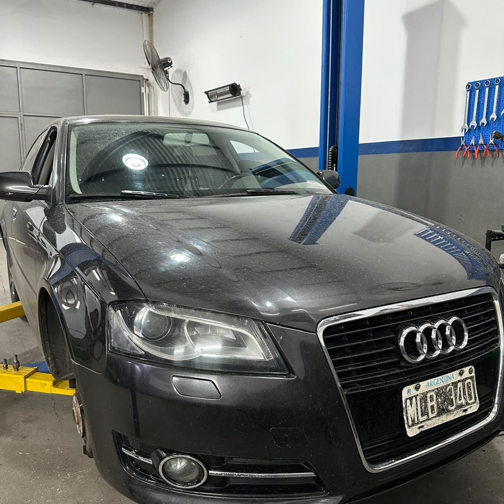

Una caja automática sin mantenimiento termina saliendo muy cara. Diagnosticamos primero, te explicamos qué tiene tu auto y recién ahí presupuestamos.

El aceite y los filtros de la caja se desgastan con el uso. Cuando dejan de cumplir su función, el desgaste pasa a las piezas internas y lo que era un service se vuelve una reparación grande.
Depende del fabricante, del tipo de caja y del uso del auto. Escribinos con marca, modelo y kilometraje y te decimos qué corresponde.
Sí, es nuestra especialidad (grupo VAG). También atendemos otras marcas.
Primero diagnosticamos con scanner y revisión del auto. Con eso te explicamos qué tiene y presupuestamos antes de hacer el trabajo.
Sí, damos respaldo sobre cada trabajo realizado.
En Pje. Calfucir 839, Córdoba. Atendemos de lunes a viernes, de 9 a 20 hs. Coordinamos por WhatsApp o llamando al 351 242 5013.